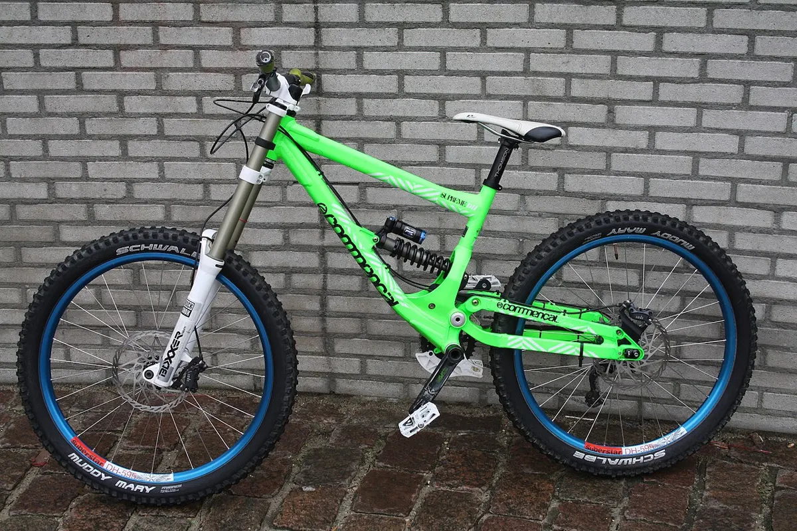
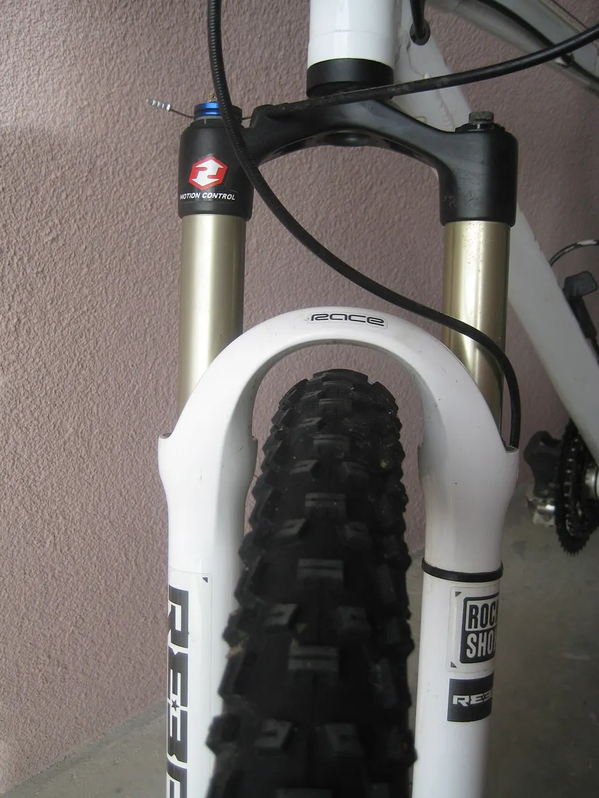
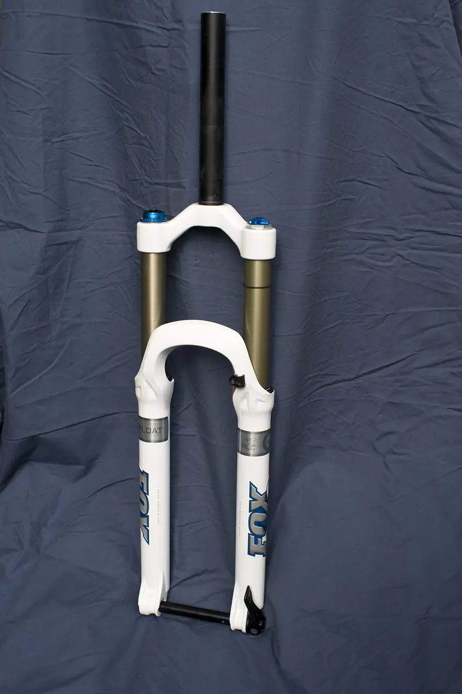

Подвеска
Как устроена подвеска, производители вилок и амортизаторов, настройка и обслуживание.

Как устроена подвеска велосипеда
Подвеска состоит из двух частей: пружины, которая держит вес и принимает удар, и демпфера, который гасит колебания маслом. Без дем…

RockShox
RockShox — американский производитель подвески, основанный в 1989 году Полом Тёрнером. Первая вилка RS-1 стала одной из первых сер…

Fox
Fox Factory — американская компания, основанная Бобом Фоксом в 1974 году; делает подвеску для мотоциклов, автомобилей и велосипедо…

SR Suntour
SR Suntour — массовый производитель вилок и других компонентов; его вилки стоят на огромном числе городских, трекинговых, электро-…

Cannondale Headshok и Lefty
Cannondale известна необычными решениями подвески. В начале 1990-х компания представила Headshok — короткоходный амортизатор, встр…
Настройка сага подвески (вилка и задний амортизатор)
Легко Инструкция
Базовое обслуживание амортизационной вилки (нижние ноги)
Сложно Инструкция
Cannondale Lefty: устройство, снятие колеса и обслуживание (общий порядок)
Сложно Инструкция